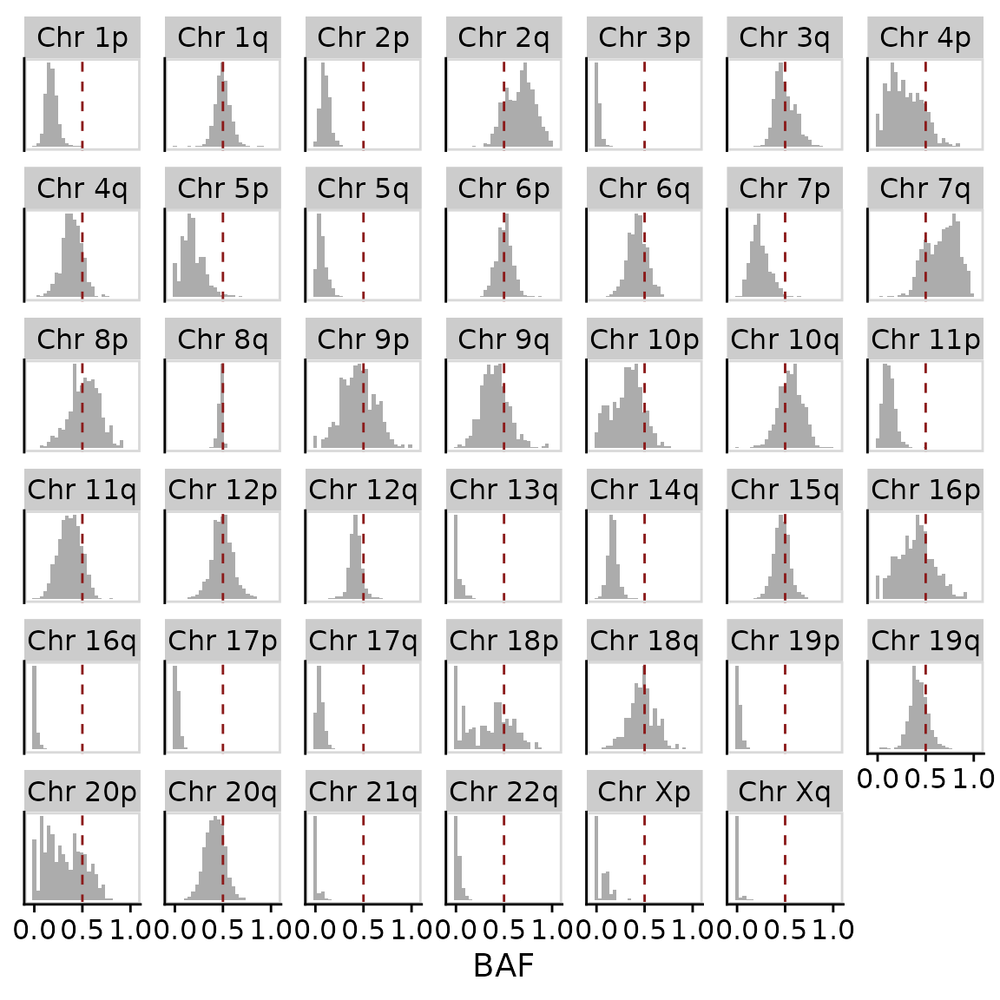
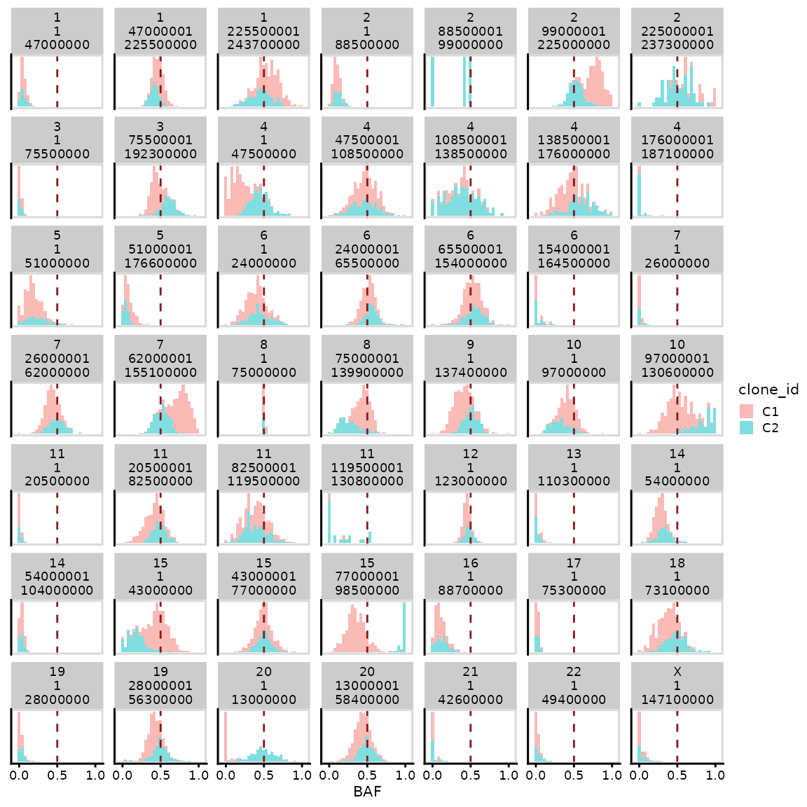
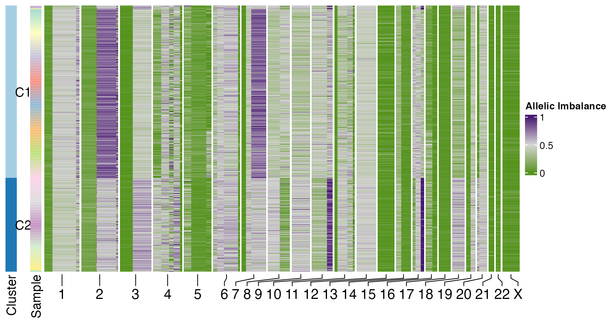
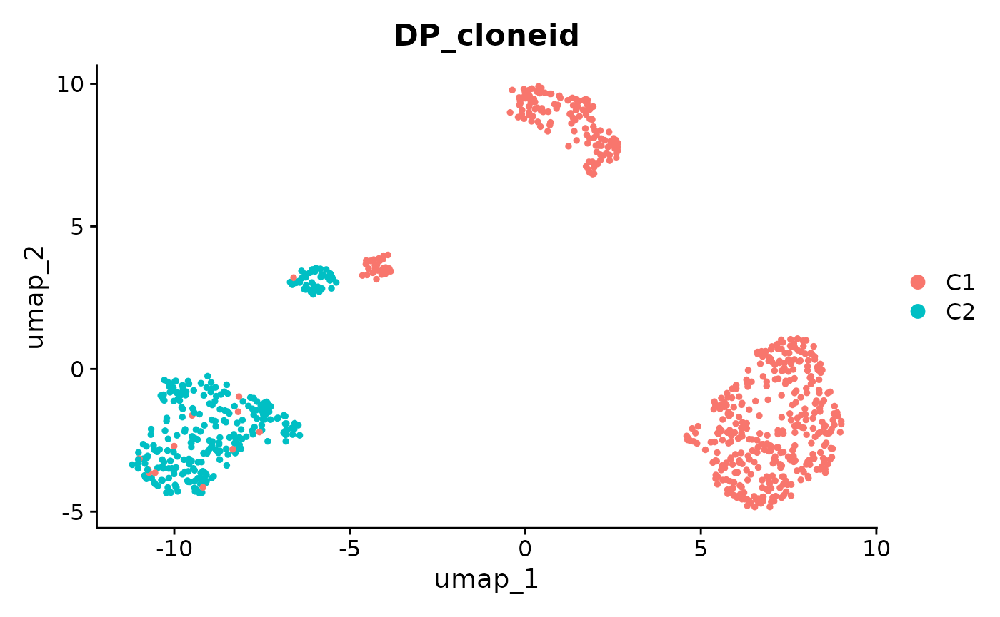
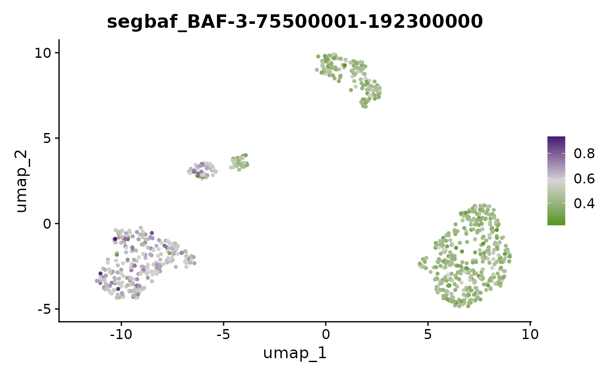

Allele Specific Copy Number Inference in scRNAseq
ASCN-RNA.RmdBackground
This vignette illustrates how to perform allele specific copy number inference in scRNAseq data. scRNAseq data is much more sparse than scDNAseq, so we perform inference on a chromosome arm basis by merging counts across arms.
Data
The data needed to perform the allele specific copy number inference are SNP calls of heterozygous positions in individual single cells. Ideally haplotype block calling should also be performed, so that each allele in each cell can be assigned to a haplotype block. To get this data you will ideally need a whole genome sequenced bulk sample of normal tissue to identify heterozygous SNPs and then you can use a tool such as cellSNP or vartrix to get per cell counts. An example dataset from ~814 cells is included here. For this dataset we also have paired scDNAseq, where we have called HSCN using schnapps.
data("haplotypes_rna")scDNA
We can use information from scDNAseq to phase the SNPs in scRNAseq. To do this we’ll first compute haplotype specific copy number in scDNAseq and use this phasing information in the scRNAseq.
It’s also possible to perform this phasing just based on scRNAseq, but in general it will be less accurate.
data("haplotypes")
data("CNbins")
haplotypes <- format_haplotypes_dlp(haplotypes, CNbins)
hscn <- callHaplotypeSpecificCN(CNbins, haplotypes)ASCN inference
The first step is to format this dataframe. This will phase the haplotypes across all the cells and add additional columns such as the B-Allele Frequency. Our scDNAseq includes information on the phasing of haplotype blocks which we’ll use as input.
data("haplotypes_rna")
haplotypes_rna <- format_haplotypes_rna(haplotypes_rna,
phased_haplotypes = hscn$haplotype_phasing)As a first look at the data we can calculate the BAF per arm in each cell and plot these distributions using per_chr_baf. Notice on this dataset that the BAFs in chromosomes 3p, 2p, and 17 in almost all cells are very left skewed towards 0 suggesting clonal LOH events in these chromosomes. We can also see other chromosome arms such as 4p and 2q that have multimodal distributions, suggesting different clusters of cells.
per_chr_baf(haplotypes_rna, perarm = TRUE)
For comparison we can plot a similar distribution from our scDNAseq dataset. Here we notice similar trends but note that data from the scRNAseq is much more dispersed due to the lower number of counts per cell. scRNAseq will have 1-2 orders of magnitude lower reads so our ability to identify SNPs is reduced.
per_chr_baf(hscn$data, perarm = TRUE)
We can also plot heatmaps of the 2 modalities as shown below.
plotHeatmapBAF(haplotypes_rna)
plotHeatmapBAF(hscn$data)
We’ll now move on to inferring the allele specific copy number in the scRNAseq. We use dirichilet process clustering using Viber to cluster cells that share similar BAF distributions across chromosomes.
haplotypes_per_arm <- per_arm_baf_mat(haplotypes_rna)
ascn_rna_dp <- assign_states_dp(haplotypes_per_arm$bafperchr)
#> [1] 814 5
#> [ VIBER - variational fit ]
ascn_rna_dp
#> Haplotype specific copy number object (RNA)
#>
#> Number of cells: 814
#> Number of clusters: 2
#> Chromosomes used for clustering: chr20p, chr16p, chr9p, chr4p, chr18Here, we found 2 clusters. We can visualize the separation of clusters using the same plot as before.
per_chr_baf(ascn_rna_dp$hscn, perarm = TRUE, labelclones = TRUE)
Heatmap
Finally we can plot heatmaps of the resulting outputs. Firstly using the scRNA.
plotHeatmap(ascn_rna_dp$hscn,
clusters = ascn_rna_dp$clusters,
reorderclusters = TRUE,
spacer_cols = 15,
plotcol = "BAF",
plottree = FALSE,
widenarm = TRUE, #make sure this is true
show_legend = FALSE)
We can also do this for the scDNAseq data. For more straightforward comparison we’ll perform the dirichilet process arm level inference as we do for the scRNAseq. We can see that the scRNAseq has much lower resolution that scDNAseq, but we are still able to recover the events shared across all cells and clones that are at a reasonably high frequency.
hscn_dna_arm <- per_arm_baf_mat(hscn$data)
ascn_dna_dp <- assign_states_dp(hscn_dna_arm$bafperchr)
#> [1] 250 5
#> [ VIBER - variational fit ]
plotHeatmap(ascn_dna_dp$hscn,
clusters = ascn_dna_dp$clusters,
reorderclusters = TRUE,
spacer_cols = 15,
plotcol = "BAF",
plottree = FALSE,
widenarm = TRUE, #make sure this is true
show_legend = FALSE)
Integration with Seurat
We can also integrate this inference with Seurat. We’ll first load a gene expression counts matrix and then run the standard Seurat pipeline,
data("countsmatrix")
library(Seurat)
x <- CreateSeuratObject(countsmatrix)
x <- NormalizeData(object = x)
x <- FindVariableFeatures(object = x)
x <- ScaleData(object = x)
x <- RunPCA(object = x)
x <- FindNeighbors(object = x)
x <- FindClusters(object = x)
#> Modularity Optimizer version 1.3.0 by Ludo Waltman and Nees Jan van Eck
#>
#> Number of nodes: 814
#> Number of edges: 24960
#>
#> Running Louvain algorithm...
#> Maximum modularity in 10 random starts: 0.7907
#> Number of communities: 7
#> Elapsed time: 0 seconds
x <- RunUMAP(object = x, dims = 1:20, reduction = "pca")Then we can use createBAFassay to add a BAF assay and add clone_id to the metadata.
x <- createBAFassay(x, ascn_rna_dp)This means all the Seurat functionality is available to analyse the allele specific copy number. For example we can plot low dimensional embeddings of BAF values per cell per chromosome or coloured by clone as shown below.
DimPlot(x, group.by = "DP_cloneid")
FeaturePlot(x, "BAF-3q") + scale_color_gradientn(colors = scBAFstate_cols())
FeaturePlot(x, "BAF-10p") + scale_color_gradientn(colors = scBAFstate_cols())
VlnPlot(x,"BAF-10p", group.by = "DP_cloneid")